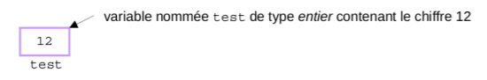

Notions élémentaires
L'objectif de la programmation est de créer des logiciels ou programmes. Ceux-ci sont constitués d'un ensemble de traitements qui permettent de transformer des données numériques (les entrées) en d'autres données numériques (les sorties). Les données de sortie peuvent être affichées sous une forme graphique (avec 1 des fenêtres comme le fond les programmes tels que Word et Excel) ou plus simplement affichées dans une console?1 sous forme de texte. Que se passe-t-il pour l'ordinateur lorsqu'on exécute un programme ? Il va lire le fichier exécutable du programme comme une suite de 0 et de 1 (codage binaire) et exécuter l’une après l'autre les instructions ainsi codées. Cette suite de 0 et de 1 est appelée langage machine et est directement exécutable par le microprocesseur de l'ordinateur. Or il est très difficile pour un humain de programmer directement en binaire, c'est pourquoi on utilise un langage de programmation écrit en langage textuel dans un fichier source (fichier .java). Le fichier source est ensuite compilé? en langage binaire (fichier .class) puis exécuté pour réaliser les traitements.
Les variables constituent l'aspect le plus important de la programmation, puisqu'elles permettent de stocker dans un emplacement mémoire les données et de les transformer en utilisant des opérateurs? . On peut se représenter une variable comme une étiquette associée à une unique boîte dans laquelle est rangée une valeur d’un certain type (entier ou réel, par exemple) :
Avant de pouvoir utiliser une variable, il est nécessaire de la déclarer? , c'est-à-dire d’associer la variable à un emplacement de la mémoire et de spécifier son type. C’est en fonction du type de la variable que la taille de l'emplacement mémoire (en octet, soit 8 bits) et le codage binaire de la valeur seront déterminés. La déclaration se fait par une instruction de la forme :
typeVariable nomVariable; La variable nomVariable est de type typeVariable. Il lui est associé un emplacement mémoire qui contient une valeur qu'il faut initialiser? . Cela se fait en utilisant l'opérateur d'affectation “=” :
nomVariable = uneValeur; L’affectation? écrit dans l'emplacement mémoire associé à nomVariable la valeur uneValeur. On dit alors que nomVariable “prend la valeur” uneValeur
uneValeur doit être compatible avec le type de nomVariable. Par exemple si typeVariable est un entier, uneValeur doit être une valeur entière. On peut faire ici le parallèle entre le type d’une variable et l'unité de mesure d’une grandeur physique qui spécifie la nature de la grandeur manipulée.
On peut également faire la déclaration et l'initialisation d’une variable en une seule instruction :
typeVariable nomVariable = uneValeur;Dans la suite, nous allons détailler les quatre types dits “primitifs”? mémoire (contrairement aux types non primitifs que nous verrons dans la section 3), c'est-à-dire que la valeur affectée à la variable est stockée dans l'emplacement mémoire associée à celle-ci. Pour chacun de ces types, nous verrons également les opérateurs que l'on peut appliquer sur des variables de ce type pour transformer leur valeur.
LES TYPES PRIMITIFS
LES CONVERSIONS
LES OPÉRATEURS DE COMPARAISON
- == comparaison d’égalité
- != différence
- < inférieur strict
- <= inférieur ou égal (s’écrit de la même manière dont on le prononce)
- > supérieur strict
- >= supérieur ou égal (s’écrit de la même manière dont on le prononce)
On distingue 4 catégories de types primitifs (entier, réel, booléens, caractères). L'intervalle de valeurs représentables pour chacun des types peut varier en fonction de l'espace mémoire qu'ils occupent.
Nom |
Taille |
|---|---|
byte |
1 octet |
short |
2 Octets |
int |
4 octets |
long |
8 octets |
On peut appliquer des opérateurs arithmétiques (+,-,*,/) à deux variables ou deux expressions de type entier (la composition étant possible comme en mathématiques). Le résultat de cette opération est également du type entier (ce qui permet la composition).
Lorsque les deux opérandes sont de type entier, l'opérateur / calcule la division entière et l'opérateur % calcule le reste de cette division.
LES RÉELS La description du codage des réels est décrite dans le cours de numération sur la page du CIPC. En Java il existe deux types de représentation pour les nombres réels : simple et double précision (respectivement les types float et double).
Nom |
Taille |
|---|---|
float |
4 octet |
double |
8 Octets |
Lorsqu'au moins une des opérandes est de type réel, l’opérateur / calcule la division réelle.
LES BOOLÉENS Un type de variable très utile en informatique est le type booléen, qui prend deux valeurs VRAI ou FAUX.
Nom |
Taille |
Valeurs |
|---|---|---|
boolean |
1 octet |
true / false |
LES CARACTÈRES Le type caractère peut correspondre à n'importe quel symbole du clavier (lettre en majuscule ou minuscule, chiffre, ponctuation et symboles).
Nom |
Taille |
|---|---|
char |
2 octets |
Pour distinguer la valeur correspondant au caractère a de la variable dénommée a, on utilise l' apostrophe pour la première.
Comme toute donnée numérique, un caractère est encodé sous forme d’une suite de 0 et de 1 que l'on peut
interpréter comme un entier non signé. Dans certains contextes, il est utile de manipuler directement ce code.
On convertit alors la variable de type char en une variable de type int comme expliqué ci-dessous.
La conversion (également appelée transtypage) d’un type primitif en un autre se fait de la manière suivante :
typeVariableA variableA = (typeVariableA) valeurBSi variableA et valeurB ne sont pas du même type, cette instruction affecte à variableA la conversion de la valeur de valeurB dans le type typeVariableA
Les opérateurs de comparaison permettent de comparer deux variables d’un même type primitif (entier, flottant, booléen et caractère) et renvoient une valeur booléenne :
De manière générale, la structure d’un programme simple est toujours la même. Cette structure de base doit être apprise par cœur, car elle constitue le squelette du programme. Il est conseillé, lors de la création d’un programme, de commencer par écrire cette structure. En effet, une fois cette structure créée, le programme est fonctionnel : il peut être compilé? et exécuté?. Bien entendu à ce stade, le programme ne fait strictement rien puisqu’il n’y a aucune instruction, seulement des commentaires.
public class Exemple{ //Exemple est le nom du programme
// écrit dans le fichier Exemple.java
public static void main (String[] args){
//bloc d’instructions du programme
//exécutées lors du lancement du programme
}
}Le principe d’un programme est de modifier le contenu des variables à l’aide des instructions élémentaires que nous venons de voir (affectation et opérateurs). Or, nous pouvons vouloir que ces instructions ne soient réalisées que dans certains cas, ou bien nous pouvons vouloir répéter l’exécution de ces instructions. Ce sont les structures de contrôle qui permettent de spécifier si l’exécution d’un traitement est conditionnée ou bien si elle se fait de manière répétée.
BLOC D’INSTRUCTIONS
Les accolades {} permettent de délimiter un bloc d’instructions, c’est-à-dire un ensemble d’instructions qui vont être exécutées les unes à la suite des autres. Un bloc d’instructions peut, par exemple, être exécuté que lorsqu’une condition est vérifiée ou bien il peut être exécuté plusieurs fois de suite. Ce sont les structures de contrôle conditionnelles et itératives qui permettent d’exprimer cela. Les variables déclarées? dans un bloc sont accessibles à l’intérieur de ce bloc uniquement.
STRUCTURES CONDITIONNELLES
Les structures de contrôle conditionnelles permettent de spécifier à quelles conditions un bloc d’instructions va être exécuté. Cette condition est exprimée par une expression logique.
LA STRUCTURE ALTERNATIVE Le premier type de conditionnelle s’écrit comme suit :
if (condition) {// équivalent à (condition == true)
// bloc d’instructions exécutées si condition est vraie
} else {
// bloc d’instructions exécutées si condition est fausse
}Cette structure de contrôle exprime une alternative. Or, il est possible de vouloir qu’un bloc soit exécuté sous une certaine condition et que sinon, aucune instruction ne soit exécutée. Dans ce cas, la clause else et son bloc sont supprimés. Les parenthèses autour de condition, qui est variable ou une expression à valeur booléenne, sont obligatoires.
LA STRUCTURE CHOIX MULTIPLES Le second type de conditionnelle permet de faire plusieurs tests de valeurs sur le contenu d’une même variable. Sa syntaxe est la suivante :
switch (variable) {
case valeur1 :
Liste d’instructions // exécutées si (variable == valeur1)
break;
case valeur2 :
Liste d’instructions // exécutées si (variable == valeur2)
break;
...
case valeurN :
Liste d’instructions // exécutées si (variable == valeurN)
break;
default:
Liste d’instructions // exécutées sinon
}Le mot clé default précède la liste d’instructions qui sont exécutées lorsque variable a une valeur différentes de valeur1,..,valeurN. Le mot clé break indique que la liste d’instructions est terminée.